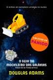

harry potter e a ordem da fênix

sinopse
Harry Potter and the Order of the Phoenix é o quinto livro dos sete volumes da série de fantasia Harry Potter, tanto em termos cronológicos como em ordem de publicação, da autora inglesa J. K. Rowling
donte :google books
| data |
autor |
idioma original |
Gêneros |
editora |
Número de páginas |
| 21 de junhp de 2003 |
J.K Rowling |
Inglês |
Romance, Ficção juvenil, Literatura fantástica |
Rocco |
702 |
senhor dos anéis e a sociedade do anel

sinopse
A Sociedade do Anel O volume inicial de O Senhor dos Anéis, lançado originalmente em julho de 1954, foi o primeiro grande épico de fantasia moderno, conquistando milhões de leitores e se tornando o padrão de referência para todas as outras obras do gênero até hoje. A imaginação prodigiosa de J.R.R. Tolkien e seu conhecimento profundo das antigas mitologias da Europa permitiram que ele criasse um universo tão complexo e convincente quanto o mundo real. A Sociedade do Anel começa no Condado, a região rural do oeste da Terra-média onde vivem os diminutos e pacatos hobbits. Bilbo Bolseiro, um dos raros aventureiros desse povo, cujas peripécias foram contadas em O Hobbit, resolve ir embora do Condado e deixa sua considerável herança nas mãos de seu jovem parente Frodo. O mais importante legado de Bilbo é o anel mágico que costumava usar para se tornar invisível. No entanto, o mago Gandalf, companheiro de aventuras do velho hobbit, revela a Frodo que o objeto é o Um Anel, a raiz do poder demoníaco de Sauron, o Senhor Sombrio, que deseja escravizar todos os povos da Terra-média. A única maneira de eliminar a ameaça de Sauron é destruir o Um Anel nas entranhas da própria montanha de fogo onde foi forjado. A revelação faz com que Frodo e seus companheiros hobbits Sam, Merry e Pippin deixem a segurança do Condado e iniciem uma perigosa jornada rumo ao leste. Ao lado de representantes dos outros Povos Livres que resistem ao Senhor Sombrio, eles formam a Sociedade do Anel. Alguém uma vez disse que o mundo dos leitores de língua inglesa se divide entre os que já leram O Senhor dos Anéis e os que um dia lerão o livro. Com esta nova tradução da obra, o fascínio dessa aventura atemporal ficará ainda mais evidente para os leitores brasileiros, tanto os que já conhecem a saga como os que estão prestes a descobrir seu encanto.
fonte :google books
| data |
autor |
idioma original |
Gêneros |
editora |
Número de páginas |
| 29 de julho de 1954 |
J.R.R. Tolkien |
Inglês |
Literatura fantástica, Alta fantasia, Ficção de aventura, Romance de cavalaria, Fantasia heroica |
HarperCollins Brasil |
576 |
O ladrão de raios

sinopse
Primeiro volume da saga Percy Jackson e os olimpianos, O ladrão de raios esteve entre os primeiros lugares na lista das séries mais vendidas do The New York Times. O autor conjuga lendas da mitologia grega com aventuras no século XXI. Nelas, os deuses do Olimpo continuam vivos, ainda se apaixonam por mortais e geram filhos metade deuses, metade humanos, como os heróis da Grécia antiga. Marcados pelo destino, eles dificilmente passam da adolescência. Poucos conseguem descobrir sua identidade. O garoto-problema Percy Jackson é um deles. Tem experiências estranhas em que deuses e monstros mitológicos parecem saltar das páginas dos livros direto para a sua vida. Pior que isso: algumas dessas criaturas estão bastante irritadas. Um artefato precioso foi roubado do Monte Olimpo e Percy é o principal suspeito. Para restaurar a paz, ele e seus amigos – jovens heróis modernos – terão de fazer mais do que capturar o verdadeiro ladrão: precisam elucidar uma traição mais ameaçadora que fúria dos deuses.
fonte :google books
| data |
autor |
idioma original |
Gêneros |
editora |
Número de páginas |
| 15 de dezembro de 2011 |
Rick Riordan |
Inglês |
Romance, Mitologia grega, Fantasia, Literatura fantástica, Ficção juvenil, Alta fantasia |
Editora Intríseca |
387 |
alice no país das maravilhas

sinopse
A garota Alice vê um coelho branco entrar em uma toca. Vai atrás dele e chega ao País das Maravilhas. Ela muda de tamanho muitas vezes e conhece criaturas esquisitas, como a Lagarta, a Duquesa, o Gato de Cheshire, a Lebre de Março, o Chapeleiro Maluco e o Rei e a Rainha de Copas. Tradução de Ligia Cademartori para o clássico de Lewis Carroll.
fonte :google books
| data |
autor |
idioma original |
Gêneros |
editora |
números de páginas |
| 2010 |
Lewis Carroll |
Inglês |
Literatura infantil, Literatura fantástica, Ficção Absurdista, Fantástico |
FTD Educação |
112 |
o guia do mochileiro das galáxias

sinopse
Considerado um dos maiores clássicos da literatura de ficção científica, O Guia do Mochileiro das Galáxias vem encantando gerações de leitores ao redor do mundo com seu humor afiado.
Este é o primeiro título da famosa série escrita por Douglas Adams, que conta as aventuras espaciais do inglês Arthur Dent e de seu amigo Ford Prefect.
A dupla escapa da destruição da Terra pegando carona numa nave alienígena, graças aos conhecimentos de Prefect, um E.T. que vivia disfarçado de ator desempregado enquanto fazia pesquisa de campo para a nova edição do Guia do Mochileiro das Galáxias, o melhor guia de viagens interplanetário.
Mestre da sátira, Douglas Adams cria personagens inesquecíveis e situações mirabolantes para debochar da burocracia, dos políticos, da "alta cultura" e de diversas instituições atuais. Seu livro, que trata em última instância da busca do sentido da vida, não só diverte como também faz pensar.
fonte :google books
| data |
autor |
idioma original |
Gêneros |
editora |
número de páginas |
| 9 de novembro de 2010 |
Douglas Adams |
Inglês |
Ficção científica, Romance, Humor, Ficção humorística, Ficção científica cômica |
Arqueiro |
208 |